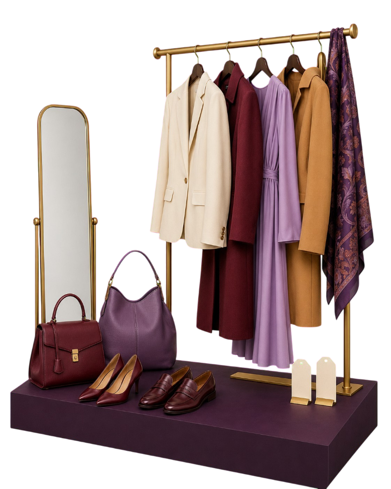
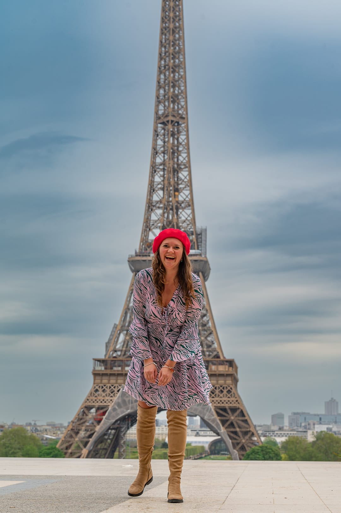

Шкаф ломится, а брендовые вещи стали велики, малы или не по стилю? Продавать по одной в интернете — гемор: без примерки брендовое не берут. Здесь примерка есть — онлайн-каталог, а потом офлайн-маркет 27.09 на 500+ гостей: зал 363 м² под крышей, с музыкой и просекко.
На вырученные деньги можно
купить билет на форум 😉

Оплачиваешь участие — от 89 CHF, один раз, вещей сколько угодно. В ответ приходит доступ в личный кабинет (с 10.08).
Фото, размеры и твоя цена — всё. Описания, фильтры и каталог на 3 языках делаем мы. У тебя своя онлайн-каталог с QR-кодом.
Это две разные опции: покупка — сразу онлайн с оплатой, бронь — интерес к вещи. За бронями не следишь — просто видишь спрос и статистику. На горячие позиции можем объявить аукцион.
Зал 363 м², ждём 500+ гостей. Раздевалки, плечики, развеска по размерам, на вещах QR-код на твою витрину. Купленное сразу гаснет в каталоге, лист ожидания получает оповещение.
Вещи можно отправить почтой — это пакет «Под ключ»: приём, обработка фото и описания на нас, обратная отправка непроданного включена.
Первый маркет — в Бадене. Если формат зайдёт, добавим Цюрих и другие кантональные столицы.
Louis Vuitton, Chanel, Gucci, Prada, Hermès, Dior, Bottega Veneta, Loro Piana, Max Mara, Burberry.
BOSS, Sandro, Maje, Ted Baker. Онлайн размещать можно всегда, на маркет — по отбору.
H&M, Zara и подобное: это не люкс, маркет им не поможет.
Свои категории в каталоге — там тоже есть спрос.
Офлайн-маркет 27 сентября состоится при 100+ позициях в каталоге — иначе объявим другую дату. Онлайн-каталог работает в любом случае.
Витрина бессрочно. Каталог на русском, немецком и английском. QR-код на твою витрину. Личный кабинет со статистикой.
Без офлайн-маркета.
Всё из «Онлайн» плюс участие в двух офлайн-маркетах: развеска по размерам, этикетки с QR, раздевалки, работа с покупателями.
Приезжать не обязательно.
Одна коробка, до 25 единиц товара. Мы всё принимаем, фотографируем, пишем описания и выкладываем в твой кабинет. Тебе — только следить и согласовать цены, которые мы подберём. Плюс приоритет в каталоге.
Обратная отправка непроданного включена.
* Если вещи потребуют дополнительной подготовки или чистки — согласуем с тобой порядок действий.
Комиссия 12% — только с реальных продаж. Вещей в каталоге сколько угодно.
Первым 20 — пакет «Маркет» за 109 вместо 159. Тестовый маркет проводим один раз.
Мы не единственный вариант. Вот все, честно, с полными цифрами. Пример один и тот же: вещей продано на 1'000 CHF. Считаем не только комиссию, но и всё, что придётся заплатить и потратить.
Берут 30–60% с продажи. Фикса нет. И берут не все вещи и не всегда — отбор на их условиях.
Среднее по диапазону 400–700 CHF: до тебя доходит примерно половина.
Комиссия по шкале плюс 3% за платёж — на обычном ассортименте около 23%.
На десять вещей.
Комиссия 12% на одежду и украшения. Фикса нет.
На десять вещей.
Аренда 19 CHF в день × 12 дней = 228 CHF плюс комиссия 20%.
Аренда платится вперёд, независимо от продаж.
Лучший стенд 3×2 м — 175 CHF, стол 20, стул 5. Итого 200 CHF за день. Комиссии нет.
Стенд оплачен заранее — продаж может и не быть.
12 CHF за погонный метр, рейл и стол занимают 3.5 метра — 42 CHF. Оборудование, тент и коробки везёшь сама, парковка ~20. Итого 62 CHF со своей машиной, плюс 100–150 за фургон без неё.
Со своей машиной; без неё минус 100–150 CHF за фургон. Завоз с 06:30, разбирать стенд раньше 16:00 город запрещает. Тент свой, рынок не отменяют — дождь означает мокрые вещи и пустую площадь.
Пакет 159 CHF плюс комиссия 12%.
Всё остальное на нас: описания, перевод на три языка, развеска, этикетки, раздевалки, разговор с покупателем.
По чистым деньгам мы не первые. Ricardo дешевле нас на 159 франков. Городской блошиный — на двести с лишним. Вопрос только в том, во сколько ты оцениваешь свой час.
И ещё одно, честно: хорошую вещь редко покупают сразу. Её хотят примерить, потрогать, проверить подлинность, посмотреть на свет. Организовать это самой — отдельный квест: договориться, встретиться, впустить незнакомого человека домой, объяснить, почему это оригинал. Этот квест мы решаем за тебя: примерочные, свет, вешалки, документы под рукой и живой разговор с покупателем.
И это если считать, что люкс на площади вообще продастся. Он не продастся. Справочно: если твой час стоит дороже 40 франков — дальше можно не считать.
При загрузке вещи ты подтверждаешь её подлинность. Копии, реплики и «почти оригинал» не размещаем — приписка в описании от ответственности не освобождает.
Есть чек, серийный номер, dust bag, коробка? Загружай — это заметно поднимает цену и скорость продажи.
Вещи с чеками и документами получают в каталоге статус — и продаются быстрее:
Не продалось ничего за два маркета — возвращаем взнос за участие. Гарантия действует на вещи, у которых есть два признака:
Чек, сертификат, серийный номер, оригинальная коробка, dust bag, карточка подлинности — что-то из этого.
При загрузке каждой вещи мы даём рекомендованную цену: смотрим бренд, состояние, сезон, комплектность и то, за сколько похожие вещи реально уходят в Швейцарии — не по каталогу, а по факту.
Поставить можно любую цену, вещь твоя. Но если цена выше рекомендованной или подтверждения нет — гарантия на эту позицию не действует.
Мы отвечаем за то, на что влияем. Завышенная цена — единственная настоящая причина, по которой люкс не продаётся. С ней не справится ни одна витрина.
У каждой вещи свой QR-код. Продалась онлайн по брони или на маркете при сканировании — сделка попадает в твой личный кабинет автоматически. Ты в любой момент видишь, что продано, что забронировано и сколько всего вышло.
Деньги можно принимать двумя способами:
Комиссию мы выставим отдельным счётом после маркета.
Ты получаешь свою сумму на счёт за вычетом комиссии. Ничего не выставляешь, с наличными не возишься. Оплата картой добавляет 3% платёжного сбора.
Переключить режим можно в кабинете в любой момент до маркета. Подробности — в условиях участия.
Чисто, выстирано, хорошо пахнет, всё застёгивается и работает. Это не придирки. Покупатель берёт вещь в руки, и решение принимается за три секунды — раньше, чем прочитан ярлык с ценой.
Пятна, дыры, растянутые манжеты и горловины, посторонний запах, сломанные молнии, стёртая подошва, следы ремонта на видном месте.
Отбор делаем до маркета, а не на нём. Так честнее: узнаешь заранее, а не постфактум.
Забрать вещи можно в день маркета до закрытия или в течение недели по договорённости. Отправленное почтой уезжает обратно за наш счёт.
Онлайн-каталог продолжает работать — маркет заканчивается, каталог нет.
Если вещи не забраны и не оплачена обратная пересылка в течение 30 дней, они переходят к нам. Пишем об этом прямо, чтобы потом не было недоразумений.
В моей галерее в Бадене, в 2024 году. Вот как это выглядело — теперь выходим на новый уровень.

Я не первый год собираю людей и события. Один из последних кейсов — MOTO-ZÜRICH: событие, которое мы с мужем сделали вдвоём, условно с нуля за полгода — 22 000 человек. Маркет и форум Frankenplatz собираю с тем же подходом: серьёзно, по делу, до мелочей. Все проекты — на chudina.me.
Теперь я делаю только масштабные проекты =)) Потому что на мото я сделала так: смотри reel →
Главное событие — форум о деньгах в Швейцарии: пенсия, налоги, инвестиции, бизнес. Два дня среди своих, 15 мин от Zürich HB.
Кабинеты откроются с 10.08 — пришлём ссылку. После оплаты — доступ в кабинет: загрузишь фотки и цены. Офлайн-маркет состоится при 100+ позициях — иначе объявим другую дату. Онлайн-каталог актуален всегда.
У меня вопрос